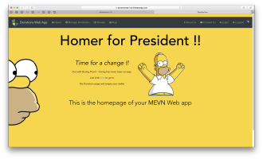
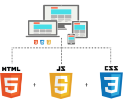
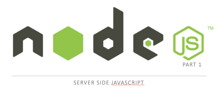
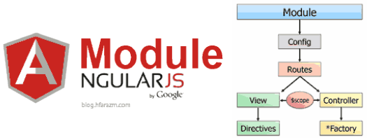
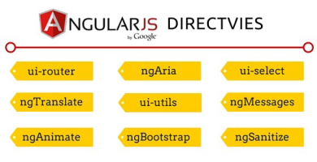

Assignments
Assignment-1
Assignment-2
1: Overview
Module Overview
JavaScript Overview
Introdcution to REST
Web Apps Overview
JS.Lab-01
JS.Lab-02
2: Node.js
Node - Part 1
Node - Part 2
Setup
Lab-01
Lab-02
3: Node.js & Mongo
Node - Part 3
Lab-03
4: Vue.js
Angular - Part 1
Angular - Part 2
Angular - Part 3
Deploy-to-Firebase
Lab-04
Lab-05
Web App Development 2
All slides's in Module
Assignment-1
Assignment-2

Module Overview

JavaScript Overview
Introdcution to REST
Web Apps Overview
Node - Part 1

Node - Part 2
Node - Part 3
Angular - Part 1
Angular - Part 2

Angular - Part 3
